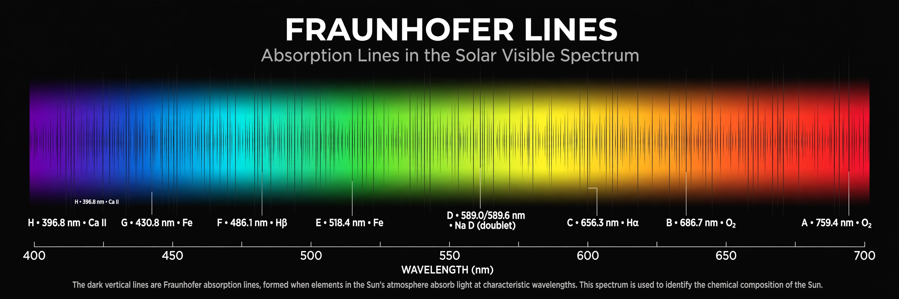

| Absorption spectrum | |
|---|---|
| Type | Electromagnetic spectrum |
| Produced by | Radiation passing through cooler matter |
| Appearance | Dark lines or bands on a bright background |
| Used in | Spectroscopy, astronomy, analytical chemistry |
An absorption spectrum is the spectrum of electromagnetic radiation transmitted through a substance, showing dark lines or bands where photons of specific frequencies have been absorbed by the material. Because each atom and molecule absorbs light only at characteristic frequencies — corresponding to transitions between its energy levels — the pattern of an absorption spectrum serves as a fingerprint identifying the composition of the absorbing substance.
When broadband radiation (such as white light or starlight) passes through a gas or liquid, atoms in the material absorb photons whose energies exactly match the gaps between their electron energy levels. The transmitted light is therefore missing those frequencies, and when dispersed by a prism or diffraction grating it shows dark lines at those positions. Cooler gas in front of a hotter, brighter source produces the classic absorption-line spectrum; the same gas heated alone would emit an emission spectrum with bright lines at exactly the same frequencies, a relationship summarized in Kirchhoff's laws of spectroscopy.
In 1802 William Hyde Wollaston first noticed dark lines in the solar spectrum, and in 1814 Joseph von Fraunhofer systematically mapped hundreds of them, which are still called Fraunhofer lines. Gustav Kirchhoff and Robert Bunsen showed in 1859–1860 that each chemical element produces a unique spectral pattern, founding spectral analysis. Comparing the Sun's absorption lines with laboratory spectra revealed that the Sun contains hydrogen, sodium, iron, and other familiar elements; in 1868 an unmatched line in the solar spectrum led to the discovery of helium, named after the Greek helios.
Absorption spectroscopy underpins much of modern astronomy: the spectra of stars and galaxies reveal their composition, temperature, density, and — through redshift — their motion and distance. On Earth, absorption measurements identify pollutants, monitor atmospheric gases such as carbon dioxide and ozone, determine concentrations in chemical analysis (governed by the Beer–Lambert law), and characterize pigments and materials. Infrared and ultraviolet-visible absorption spectra are routine tools in chemistry for identifying molecules and functional groups.